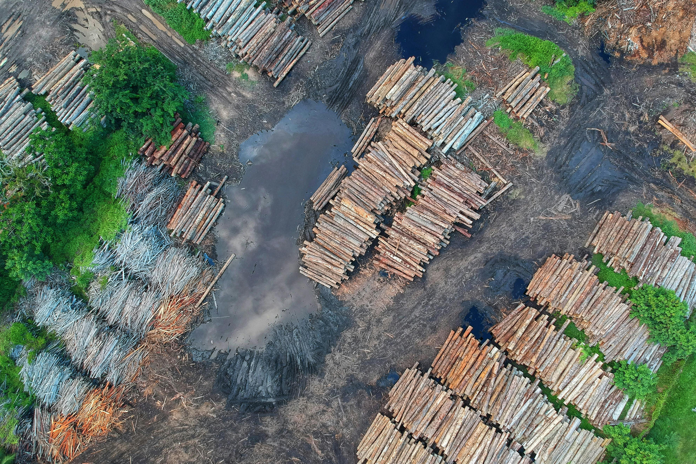

Monitoramento e Mapeamento Agrícola

O AgriRS realiza o monitoramento e o mapeamento das principais
culturas agrícolas cultivadas no Brasil utilizando dados de sensoriamento remoto. As
classificações são feitas utilizando imagens de satélite pré-processadas e algoritmos de
classificação que visam identificar áreas cultivadas com diferentes culturas. Essa abordagem
permite acompanhar a dinâmica espacial das lavouras ao longo das safras, contribuindo para o
planejamento agrícola e para políticas públicas voltadas ao setor.
Estimativas de Produtividade e Análise de Quebras de Safras

Com base em séries temporais de imagens de satélite e dados
meteorológicos, o AgriRS desenvolve metodologias para estimar a produtividade das culturas e
avaliar perdas causadas por eventos extremos, como estiagens e geadas. Essas análises permitem
identificar áreas com risco de quebra de safra e fornecer informações estratégicas para órgãos
de planejamento, assistência técnica e seguro agrícola.
Fenologia das culturas agrícolas

No AgriRS, o acompanhamento da fenologia das culturas é realizado por
meio de séries temporais de índices espectrais derivados de imagens de satélite. Essa abordagem
possibilita identificar etapas importantes do ciclo das culturas, como datas de plantio,
enchimento de grãos, florescimento e colheita.
Análise de Impactos Ambientais e Detecção de Desmatamento

O AgriRS aplica técnicas de sensoriamento remoto para detectar
alterações no uso da terra, como desmatamentos, expansão agrícola sobre áreas naturais e
degradação da vegetação nativa. Essas análises podem servir como subsídio para ações de
fiscalização ambiental e gestão mais sustentável dos recursos naturais. Isso contribui para a
preservação dos biomas e para o desenvolvimento de práticas agrícolas mais sustentáveis.